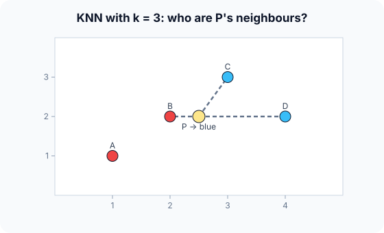

Prerequisites
- Euclidean distance: $\sqrt{(x_1 - x_2)^2 + (y_1 - y_2)^2}$.
- Feature scaling.
- Bias–variance, to understand the role of $k$.
The analogy
Everyday analogy
Moving to a new town, you guess what a neighbourhood is like by asking the few people who live closest to you.
KNN does that for a new data point: find the $k$ closest known points and take a majority vote (or an average, for regression).
How it works
Requirement: features must be on comparable scales, because KNN compares raw distances. Standardize first.
Start with one classification by hand
Training: A(1, 1) red, B(2, 2) red, C(3, 3) blue, D(4, 2) blue. New point P(2.5, 2), $k = 3$, Euclidean distance. Predict, then open "Check".
Example: predict before you read
Step 1. Compute P's distance to B and to C.
Check
To B: $\sqrt{0.5^2 + 0^2} = 0.5$. To C: $\sqrt{0.5^2 + 1^2} \approx 1.12$.
Step 2. Cover the next line and guess: distances to D and to A, and the three nearest points.
Check
D: $\sqrt{1.5^2 + 0} = 1.5$. A: $\sqrt{1.5^2 + 1^2} \approx 1.80$. Nearest three: B, C, D.
Step 3. Vote with $k = 3$, then with $k = 1$. Predict both labels.
Check
$k = 3$: red 1, blue 2, so blue. $k = 1$: only B, so red. The choice of $k$ changes the answer.

Quick recall: Before reading further, cover the text above and say out loud: what does KNN do during training?
Check your answer
Nothing except store the data. All the work happens at prediction time.
Finish the picture: the effect of k
Same data, other values of $k$.
- $k = 1$. Predict the behaviour on noisy data.
Check
Very flexible: each prediction copies the single nearest point, noise included. Low bias, high variance.
- $k = 4$ (all points). Predict P's label and the general behaviour.
Check
A 2–2 tie here; in general, $k = n$ always predicts the majority class. Very smooth: high bias, low variance. Odd $k$ avoids ties with two classes.
Quick recall: Without scrolling up, say out loud: why can an unscaled feature like income ruin KNN?
Check your answer
Its large numbers dominate the distance, so the other features are effectively ignored.
Full worked calculation
Every distance for the new point $P = (2.5, 2)$, the ranking, two different votes, and why they disagree. Training points: A(1, 1) red, B(2, 2) red, C(3, 3) blue, D(4, 2) blue.
| Point | Label | $\Delta x$ | $\Delta y$ | $\Delta x^2 + \Delta y^2$ | distance $d$ | rank | weight $1/d$ |
|---|---|---|---|---|---|---|---|
| A | red | −1.5 | −1 | 3.25 | 1.803 | 4 | 0.555 |
| B | red | −0.5 | 0 | 0.25 | 0.500 | 1 | 2.000 |
| C | blue | 0.5 | 1 | 1.25 | 1.118 | 2 | 0.894 |
| D | blue | 1.5 | 0 | 2.25 | 1.500 | 3 | 0.667 |
-
1Differences per coordinate
$$\Delta x = x_i - 2.5, \qquad \Delta y = y_i - 2$$For each training point we measure how far it is from $P$ along each axis. Signs don't matter yet, because the next step squares them.
-
2Squared Euclidean distance
$$d_B^2 = (-0.5)^2 + 0^2 = 0.25, \qquad d_C^2 = 0.5^2 + 1^2 = 1.25$$Squaring removes the signs and makes larger gaps count more. To rank neighbours you can stop here: the square root never changes the order.
-
3Actual distances
$$d_A = \sqrt{3.25} \approx 1.803,\; d_B = 0.5,\; d_C = \sqrt{1.25} \approx 1.118,\; d_D = 1.5$$Taking square roots gives distances in the original units. They are needed for distance-weighted voting (step 6).
-
4Rank and keep the k nearest
$$B\,(0.5) < C\,(1.118) < D\,(1.5) < A\,(1.803) \quad\Rightarrow\quad k = 3: \{B, C, D\}$$Sorting by distance and keeping the first $k$ gives the neighbourhood that will vote. A, the farthest, is ignored with $k = 3$.
-
5Majority vote
$$\text{red}: 1 \;(B), \qquad \text{blue}: 2 \;(C, D) \quad\Rightarrow\quad \hat y = \text{blue}$$Each neighbour has one vote. Two of the three are blue, so P is classified blue, with an estimated probability of 2/3.
-
6Distance-weighted vote
$$\text{red}: \tfrac{1}{0.5} = 2.0, \qquad \text{blue}: \tfrac{1}{1.118} + \tfrac{1}{1.5} = 0.894 + 0.667 = 1.561 \quad\Rightarrow\quad \hat y = \text{red}$$A common variant gives closer neighbours bigger votes, weight $1/d$. B is so close (0.5) that its vote outweighs C and D together, and the answer flips to red.
What the numbers tell us
The prediction depends on three choices: the distance, the value of $k$, and plain versus weighted voting. Here $k = 1$ says red, $k = 3$ says blue, and weighted $k = 3$ says red again.
That sensitivity is why $k$ (and the voting rule) are chosen with cross-validation, and why features must be scaled before any distance is computed.
The rule in plain words
To classify a point, compute its distance to every training point, take the $k$ nearest, and return their majority label (or mean value, for regression).
Choose $k$ by cross-validation: small $k$ overfits, large $k$ underfits. Always scale the features first.
Quick recall: Before you read the code, describe the KNN prediction steps, in your own words. Then check below.
Check your answer
Compute the distance from the new point to every training point, find the $k$ smallest, and return the majority label among them.
The code
Read this code after you have classified P by hand. It will make more sense.
int knn_predict(double px[], double py[], int label[], int n, double qx, double qy, int k) {
double d[100]; int idx[100]; /* labels are 0 (red) or 1 (blue) */
for (int i = 0; i < n; i++) { d[i] = (px[i]-qx)*(px[i]-qx) + (py[i]-qy)*(py[i]-qy); idx[i] = i; }
int votes = 0;
for (int j = 0; j < k; j++) { /* select the j-th nearest */
int best = j;
for (int i = j + 1; i < n; i++) if (d[idx[i]] < d[idx[best]]) best = i;
int t = idx[j]; idx[j] = idx[best]; idx[best] = t;
votes += label[idx[j]];
}
return 2 * votes > k ? 1 : 0; /* majority vote */
}Definition
What you just did, in one line: k-nearest neighbours predicts the label of a point from the majority label (or average value) of its $k$ closest training points.
flowchart TD
A["new point P"] --> B["distance from P to every training point"]
B --> C["keep the k smallest distances"]
C --> D{"classification or regression?"}
D -->|classification| E["majority vote of their labels"]
D -->|regression| F["average of their values"]
How costly is it?
Quick recall: Before looking at the formula, predict: how does the cost of one prediction grow with the training set size $n$?
Check your answer
Linearly, $O(nd)$: every training point's distance must be computed.
Distances are Euclidean; one prediction compares the query with all $n$ training points in $d$ dimensions:
$$d(p, q) = \sqrt{\sum_{j=1}^{d} (p_j - q_j)^2}, \qquad \text{one prediction: } O(nd)$$| Phase | Cost | Why |
|---|---|---|
| Training | $O(1)$ (store the data) | Lazy learner: no model to fit |
| Prediction (brute force) | $O(nd)$ | Distance to every training point |
| Prediction (KD-tree, low $d$) | about $O(\log n)$ | Space partitioning prunes far points |
| Memory | $O(nd)$ | The whole training set |
Best for: small to medium datasets with few, well-scaled features and irregular class boundaries.
- Pro: No training; adapts to any boundary shape.
- Pro: Simple to understand and easy to update with new data.
- Con: Slow predictions and high memory on large datasets.
- Con: Suffers in high dimensions (distances become similar) and needs scaling.
Warning
In high dimensions, all points tend to be at similar distances from each other (the "curse of dimensionality"), so "nearest" stops meaning "similar". Reduce dimensions (e.g. PCA) or pick features first.
Exam tip
Write a distance table: one row per training point, its distance and label, then circle the $k$ smallest. That is exactly what exams expect.
Common mistakes
- Forgetting to scale features before computing distances.
- Using an even $k$ with two classes, which allows ties.
- Evaluating with the training points themselves, where $k = 1$ is always 100% correct.
Try it yourself
Exercise 1 (warm-up)
Same four points; classify Q(3.5, 2.5) with $k = 3$.
Hint
Compute the distances to C and D first.
Answer
C: $\sqrt{0.25 + 0.25} \approx 0.71$; D: $\approx 0.71$; B: $\sqrt{2.25 + 0.25} \approx 1.58$; A: $\approx 2.92$. Nearest three: C, D, B, so blue 2, red 1: blue.
Exercise 2 (a bit harder)
KNN regression with $k = 2$: training points at $x$ = 1, 2, 4, 7 with values 10, 12, 20, 30. Predict the value at $x = 3$. Write your answer down before you open it.
Show answer
Distances: 2, 1, 1, 4. The two nearest are $x = 2$ (12) and $x = 4$ (20). Prediction $= (12 + 20)/2 = 16$.
Did you know?
Did you know?
KNN was described by Fix and Hodges in 1951 and analysed by Cover and Hart in 1967, who showed that, with enough data, 1-NN's error is at most twice the best possible error.
Modern recommendation and search systems use approximate nearest-neighbour search over learned embeddings, finding similar items among billions in milliseconds.
Key points to remember
If you remember one thing from each line, remember the because.
- KNN needs no training because it stores the data and decides at prediction time.
- Predictions are slow because each one computes distances to all $n$ training points.
- Scaling is essential because distances are dominated by the largest-valued feature.
- Small $k$ overfits because a single noisy neighbour decides the label.
- Large $k$ underfits because far-away points dilute the local pattern.
Self-check questions
Answer these in order, out loud. They follow the page, so your answers become the script of your video.
- How is KNN like asking your nearest neighbours about a new town?
Sample answer
You guess what a place is like from the few people closest to you; KNN labels a point from its $k$ closest training points.
- Classify P(2.5, 2) with $k = 3$ given A, B red and C, D blue.
Sample answer
Distances: B 0.5, C 1.12, D 1.5, A 1.80. Nearest three B, C, D vote blue two to one.
- Why does the code compare squared distances instead of taking the square root?
A good answer mentions order.
Sample answer
The square root doesn't change which distances are smallest, so skipping it gives the same neighbours with less work.
- So what is KNN, in one sentence?
Sample answer
A method that predicts from the majority label, or average value, of the $k$ nearest training points.
- Why does the choice of $k$ change P's label?
A good answer relates $k$ to bias and variance.
Sample answer
With $k = 1$, only B (red) votes; with $k = 3$, C and D join and outvote it. Small $k$ follows local details (high variance); larger $k$ smooths them out (higher bias).
- What do training and one prediction cost?
Sample answer
Training is just storing the data; a brute-force prediction is $O(nd)$.
- Give two pros and two cons of KNN.
Sample answer
Pros: no training, any boundary shape. Cons: slow, memory-hungry predictions, and poor in high dimensions or without scaling.
- If you had to teach this to a friend in 2 minutes, what would you leave out, and why?
Sample answer
I'd leave out KD-trees and the curse of dimensionality. I'd keep the neighbour analogy, the P example with $k = 3$ versus $k = 1$, and "scale features, choose $k$ by CV".
External resources
- scikit-learn: Nearest neighbors: classification, regression and fast search structures.
- Wikipedia: k-nearest neighbors algorithm: theory and variants.
- GeeksforGeeks: KNN: worked examples with code.
Videos
- YouTube search: StatQuest KNN: StatQuest's short video on KNN.